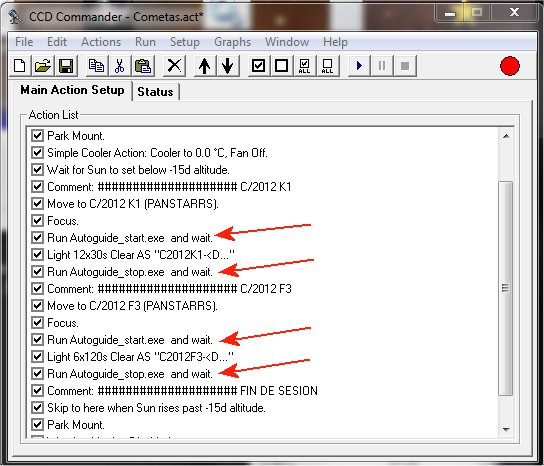
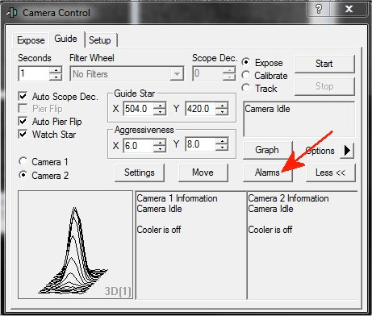
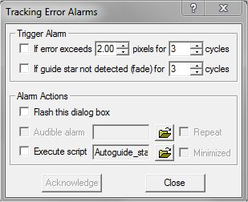
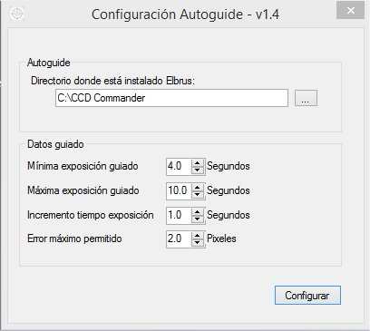
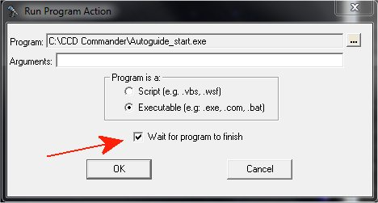

|
Autoguiado desde CCD Commander usando el algoritmo de MaximDL |
||
|
|
Versión 1.4 |
|
Me pidieron ver la posibilidad de preparar un script que le indicase a CCD Commander que si perdía la estrella de guiado volviese a buscar otra y así no arruinar una secuencia de tomas ... de esas en las que los segundos se cuentan por centenas.
Dándole vueltas al tema, he visto la oportunidad de quitarme de encima el algoritmo de selección de estrella de guiado que incorpora CCD Commander (que en mi opinión es bastante pobre) y usar directamente el de MaximDL. En más de una ocasión he tenido que parar el autoguiado que había iniciado CCDC y decirle a MaximDL que lo continuase él con otra estrella.
La forma de hacerlo es la de lanzar un programa, que se ejecutará concurrentemente con CCDC en modo demonio (daemon). Se iniciará justo antes de comenzar con la secuencia de toma de imágenes (Take images). Una vez terminada la secuencia de tomas se ejecutará otro programa que dará la orden de finalizar al primero. Evidentemente, en la acción "Take images" habrá que indicarle a CCDC que no haga autoguiado.
En la siguiente captura puede apreciarse cómo debe quedar una sesión de CCDC usando este método:

La verdad es que me ha dado más guerra de lo esperado. Aunque la idea es sencilla, el estar navegando entre dos aguas (CCDC y MaximDL) hace que en ocasiones se desencadene la tormenta perfecta y el proceso Autoguide termine muerto.
Cuando CCDC comienza la secuencia de tomas reinicia la conexión con las cámaras, lo que ha obligado a que el proceso Autoguide tenga que esperar a que comience la secuencia de tomas para iniciar el autoguiado e incluir incluso en el programa la gestión de ciertos eventos eventos, pues de lo contrario se encuentra intentando hablar con una cámara que le han desconectado. No he sido capaz, por más pruebas que he hecho, de encontrar la forma para que CCDC no actúe de esta manera. Cierto es que el interfaz que proporciona MaximDL es único para las dos cámaras, lo que complica todo mucho más.
Por otra parte, el interfaz que proporciona MaximDL, que también es muy particular, y la única manera de indicar que el sistema de guiado ha perdido la estrella (Star fade) es generando un evento, pero también hay que deshabilitar el sistema que lleva para la gestión de este tipo de problema. Así que lo mejor es que MaximDL no haga nada y sea el Autoguide quien se encargue de intentar detectar esta circunstancia. Para ello en MaximDL haremos click en el botón de Alarms:

y lo configuraremos para que no controle nada, como puede verse en la siguiente figura:

Por último, tenemos Autoguide_conf: Permite configurar varios parámetros que marcarán el comportamiento de Autoguide. Entre ellos, el error máximo permitido en la estrella de guiado. Si se supera este error se para el autoguiado y se vuelve a iniciar un nuevo proceso de selección de estrella, etc, etc. Éste es el primer programa que debes ejecutar, y se utiliza para modificar la configuración. Creará en el mismo directorio un fichero denominado Autoguide_conf.ini que contiene los parámetros de configuración.

La solución final está formada por cuatro
programas independientes. Los ejecutables
se deben descomprimir en el
mismo directorio donde esté instalado CCDC. La última versión de Autoguide (v 1.4) la
puedes descargar de
aquí.
Estos programas han sido compilados para funcionar con Microsoft .NET Framework 4.5, por lo que deberá verificar que dispone de esta versión o superior, y en su defecto, podrá descargarlo e instalarlo desde Microsoft.
Tanto Autoguide_start como Autoguide_stop se deben ejecutar desde CCDC con una acción de "Run external program". Es muy importante seleccionar la casilla que indica a CCDC que debe esperar a que terminen estos programas antes de proseguir:

Recomiendo, por experiencia propia, que verifiquéis que el autoguiado desde MaximDL funciona en todas las circunstancias ... y cuidado con los Flip Meridian. En el caso de monturas GE hay que tener en cuenta en qué lado del cielo se ha realizado el calibrado del autoguiado y configurar adecuadamente en el Setup de MaximDL, en las Opciones del telescopio el Sider of Pier. Si hemos calibrado con estrellas situadas en el Oeste habrá que seleccionar ASCOM Normal, y si lo hemos hecho con estrellas situadas en el cielo del Este indicaremos ASCOM Inverted.
Espero que os sea de utilidad.